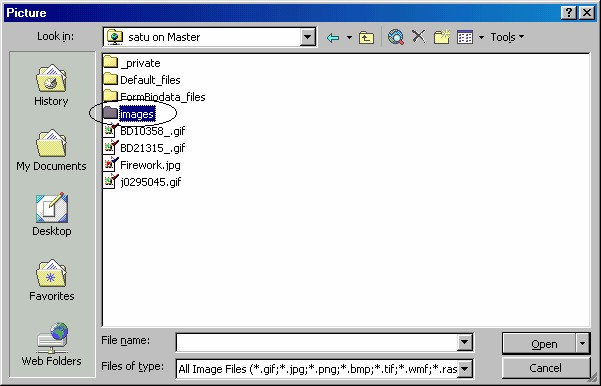

1. Memasang gambar pada halaman
Apa jadinya kalau suatu halaman web tidak ada gambarnya? Jawaban pertama
adalah pembukaan halaman menjadi lebih cepat.
Sebaliknya, meskipun gambar membuat pembukaan menjadi lambat, pada
kenyataannya kita akan tetap memasang. Kenapa? sebab dengan adanya gambargambar
tersebut halaman menjadi lebih cantik dan menarik.
Namun sebaiknya Anda membatasi jumlah dan pemakaian gambar. Sebab gambar
akan memakan waktu untuk pengiriman, waktu untuk download dan lain lain
sehingga akan memperlambat kinerja halaman.
Sebagai jalan tengahnya, usahakan hanya menggunakan gambar-gambar ukuran
kecil, kecil secara tampak mata maupun kecil ukuran filenya.
Pada saat gambar ditransfer untuk pertama kalinya, gambar akan ‘diambil’ dari
tempat asalnya, dan membutuhkan waktu seperti apa adanya. Namun pada transfer
berikutnya, gambar tidak lagi diambil dari tempat asalnya, melainkan dari cache
browser, sehingga gambar itu akan muncul dengan sangat cepat. Apabila Anda
menutup browser, maka cache browser akan dihapus. Jadi kalau Anda mengaktifkan
lagi browser dan membuka gambar yang tadi, akan lama juga, sebab pembukaan kali
ini berarti yang pertama kali. Hitungan dimulai dari pengaktifan browser.
Memasang gambar ke halaman Web adalah kegiatan menyenangkan. Dengan
gambar pula para desainer halaman web bisa begitu terkenal, karena karya-karyanya
menjadi lebih menarik. Bahayanya adalah jika Anda terbawa emosi dan
memasangkan terlalu banyak gambar, apalagi gambar yang berukuran besar.
Ingatlah bahwa kebanyakan orang masih menggunakan saluran yang lambat untuk
menyambung ke internet, yaitu saluran telepon dengan modem kecepatan rendah.
Apalagi kondisi di Indonesia seperti sekarang ini, mudah-mudahan segera berubah
menjadi seperti kondisi di negara maju.
Internet bukanlah TV dan juga bukan majalah yang bisa menampung banyak
gambar. Pada waktu merancang halaman web, pikirkanlah calon pemakai Anda dan
bekerjalah secara hati-hati dalam menangani jumlah gambar.
Ada banyak lokasi yang menyimpan file -file gambar
, yaitu:
• Gambar yang disimpan di dalam web FrontPage
• Gambar dari koleksi Clip organizer
• Gambar-gambar yang disimpan di dalam hard disk.
• Gambar-gambar dari World Wide Web atau Intranet
Mari kita lihat bagaimana cara mengambil gambar dari masing-masing sumber di
atas.
1.1 Mengambil gambar dari Web FrontPage
Yang pertama adalah mengambil gambar dari Web untuk dipasangkan pada halaman
Anda sendiri. Caranya sebagai berikut:
1. Tempatkan kursor pada lokasi di mana Anda ingin meletakkan gambar
tersebut.
2. Klik tombol Insert Picture form File ( ) pada toolbar atau aktifkan
perintah Insert _Picture _ From File. Kotak dialog Insert Picture
muncul.

Gambar 7.1 Direktori Images pada kotak dialog Insert Picture
3. Klik ganda direktori Images, lihat Gambar 7.1 di atas, folder tersebut adalah
tempat penyimpanan gambar-gambar FrontPage.
4. Setelah terbuka direktori Images terbuka, klik file gambar yang Anda
inginkan.
5. Kemudian klik OK. Gambar pilihan Anda akan ditampilkan pada lokasi
kusor di halaman.
1.2 Mengambil gambar dari koleksi Clip Organizer
Untuk mengambil gambar dari Clip Organizer, caranya sudah kita bahas pada bab
sebelumnya. Pada prinsipnya adalah:
1. Klik gambar yang Anda inginkan, lalu klik Copy.
2. Pada halaman klik kanan lokasi penyisipan gambar dan klik perintah Paste.
Gambar 7.2 Clip Organizer
1.3 Mengambil gambar dari hard disk
Untuk mengambil gambar yang disimpan di dalam hard disk, caranya paling
sederhana, yaitu seperti proses membuka suatu file. Langkah selengkapnya adalah:
1. Tampilkan kotak dialog Picture .
Gambar 7.3 Pilihan My Document _ My Pictures
2. Klik icon My Documents, lalu klik ganda folder My Pictures.
• Kalau tujuan Anda bukan folder My Pictures, Anda bisa memanfaatkan
kotak pilihan Look in untuk mencari folder yang Anda inginkan.
• Anda juga bisa menentukan format file gambar yang akan Anda buka,
seperti .TIFF, .BMP, .JPEG, .GIF dan sebagainya. Anda bisa
memilihnya pada kotak pilihan drop-down Files of type.
3. Klik file gambar yang Anda pilih, lalu klik Open.
1.4 Gambar dari World Wide Web atau Intranet
Anda dapat meminjam halaman-halaman Web di World Wide Web atau Intranet dan
mengimpornya ke dalam Web Anda sendiri.
Satu hal yang harus kita perhatikan pada proses ini yaitu kita harus mengetahui
address halaman yang mengandung gambar incaran kita.
Bagaimana cara menemukan address gambar? Hal ini tergantung dari Web Browser
Anda. Cobalah cara-cara berikut ini:
• Jika Anda menggunakan Netscape 3 atau 3.01, klik kanan gambar tersebut
dan pilih perintah Copy Picture Location.
• Jika Netscape versi yang Anda gunakan tidak memiliki perintah Copy
Picture Location, klik kanan gambar tersebut dan pilih perintah View Disc
Picture . Maka gambar tersebut akan muncul di Window Browser dengan
sendirinya. Kemudian sorotlah address dalam kotak teks pada bagian atas
dari Browser, lalu salinlah dengan menekan tombol Ctrl+C.
• Jika Anda menggunakan Internet Explorer, klik kanan sebuah gambar dan
pilihlah perintah Properties. Anda akan melihat address gambar tersebut,
lalu sorotlah dan salinlah dengan menekan Ctrl+C.
Setelah mendapatkan address dengan salah satu cara di atas, Anda dapat meletakkan
address ke dalam kotak isian address (klik kotak isian tersebut lalu tekan Ctrl+V).
Kemudian klik OK, FrontPage akan menempelkan gambar yang dari World Wide
Web atau Intranet tersebut ke halaman Anda.
Yang telah Anda lakukan di atas sebenarnya bukan mengambil gambar lalu
menempatkan gambar itu ke dalam Web Anda, namun hanya membuat referensi
yang merujuk ke gambar tersebut, yang terletak di World Wide Web atau Intranet.
1.5 Menggunakan klik kanan pada Browser
Anda dapat menggunakan cara klik kanan ini dengan Internet Explorer atau
Netscape Navigator. Klik kanan gambar yang Anda inginkan lalu pilihlah perintah
Save Picture As atau perintah lain yang mirip. Simpanlah gambar tersebut ke dalam
harddisk, lalu sisipkan gambar tersebut ke dalam halaman yang Anda inginkan.
Awas, jangan menyimpan gambar-gambar tersebut ke dalam direktori Web Anda
yang berada di dalam harddisk. Gambar tersebut tidak akan terdaftar dengan benar,
yang bisa menyebabkan gambar tidak muncul pada daftar file.
1.6 Drag-Drop, Cut-Paste
Anda juga dapat men-drag gambar-gambar dari Windows Explorer lalu menaruhnya
ke dalam halaman Anda.
Atau gunakan Office Clipboard, yaitu menyalin gambar pada suatu program ke
dalam Clipboard, lalu beralih ke halaman FrontPage dan menekan Ctrl+V untuk
melekatkan gambar tersebut.
Cobalah men-drag gambar dari tipe yang tidak dapat ditangani oleh FrontPage, maka
tampil kotak dialog yang menanyakan apakah Anda ingin menempatkan gambar
tersebut sebagai HTML, RTF, atau text. Hal ini berarti FrontPage tidak mengenali
tipe gambarnya. Rasanya hal ini tidak akan terjadi, sebab FrontPage XP telah
dilengkapi dengan kemampuan menampung berbagai jenis format gambar.
1.7 Gambar dari Scanner
Menambahkan gambar atau foto Anda sendiri? Kenapa tidak, siapkan saja sebuah
scanner untuk mengambil gambar digitalnya. Langkah yang diperlukan adalah:
1. Aktifkan Insert _ Picture _ From Scanner or Camera. Tampil kotak dialog
Camera/Scanner.
Gambar 7.4 Kotak dialog Camera/Scanner
2. Klik tombol Source, tampil dialog Select Source.
Gambar 7.5 Select Source
3. Klik jenis software scanner Anda, misalnya VitaScan V2.43, lalu klik Select.
Tampilan kembali ke kotak dialog Camera/Scanner.
4. Kemudian klik tombol Acquire…, tampil dialog pengaturan scanner.
5. Tampilan dan perilaku kotak dialog ini tergantung jenis scanner Anda. Pada
scanner penulis, kotak dialog itu tampil seperti Gambar 7.6.
6. Klik tombol Test, FrontPage XP akan bekerja selama beberapa saat untuk
pengujian. Setelah pengujian selesai, hasilnya akan dilaporkan seperti Gambar
7.6 sebelah kanan.
7. Klik OK. Muncul tampilan untuk menjalankan scanner seperti Gambar 7.7.
Gambar 7.7 Tampilan Scanner
8. Kemudian letakkan gambar atau foto pada scanner Anda dan klik tombol
Scan… pada tampilan scanner di atas, proses scanning dimulai.
9. Setelah selesai akan kembali ke kotak dialog Picture yang kali ini menampilkan
gambar hasil scanning.
10. Klik OK, tampilan kembali ke FrontPage yang telah menyisipkan gambar hasil
scanning pada lokasi kursor.
1.8 Menyimpan Gambar
Pada saat Anda menyimpan halaman yang telah disisipi sebuah gambar, FrontPage
mungkin menanyakan apakah Anda ingin menyimpan gambar tersebut ke dalam
Web? Jika gambar tersebut berasal dari Clip Organizer, atau dari harddisk, kotak
dialog akan muncul dan menanyakan apakah Anda ingin menyimpan file -file
tersebut (lihat Gambar 7.8).
Gambar 7.8 Konfirmasi penyimpanan gambar
Klik Yes (atau Yes to All sehingga Anda tidak perlu menjawab semua pertanyaan
untuk tiap gambar yang ada dalam dokumen), dan FrontPage akan menyimpan
sebuah salinan dari gambar tersebut ke dalam Web Anda.
Kita bisa saja menempatkan gambar tersebut ke direktori Ima
ges dengan menuliskan
kata Images di depan nama file gambar.
Jika gambar tersebut sudah berada di dalam Web Anda, FrontPage tidak akan
menanyakan apakah Anda akan menyimpan gambar tersebut atau tidak; karena hal
ini sudah tidak diperlukan lagi.
Perhatikan bahwa jika Anda telah menyisipkan suatu gambar dengan memasukkan
address gambar dari Web atau Intranet, berarti halaman Anda mengacu ke gambar
tersebut.
Artinya, gambar tersebut tidak akan disimpan di dalam web Anda. Sehingga jika
gambar tersebut dipindahkan atau dihapus oleh pihak lain, maka halaman Anda akan
kehilangan gambar.
Copyright © Herlan Lesmana
Created with the Freeware Edition of HelpNDoc: Free Web Help generator